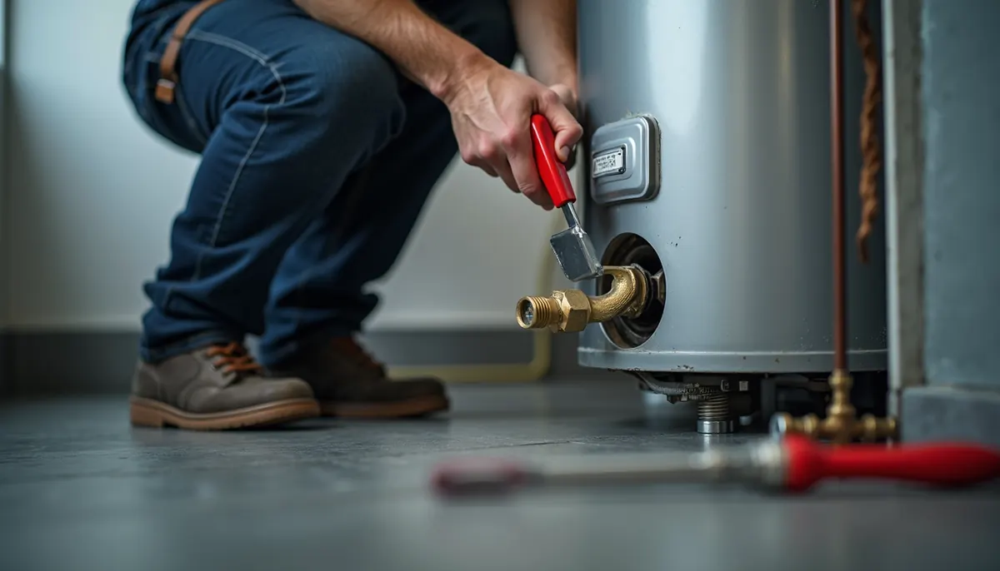
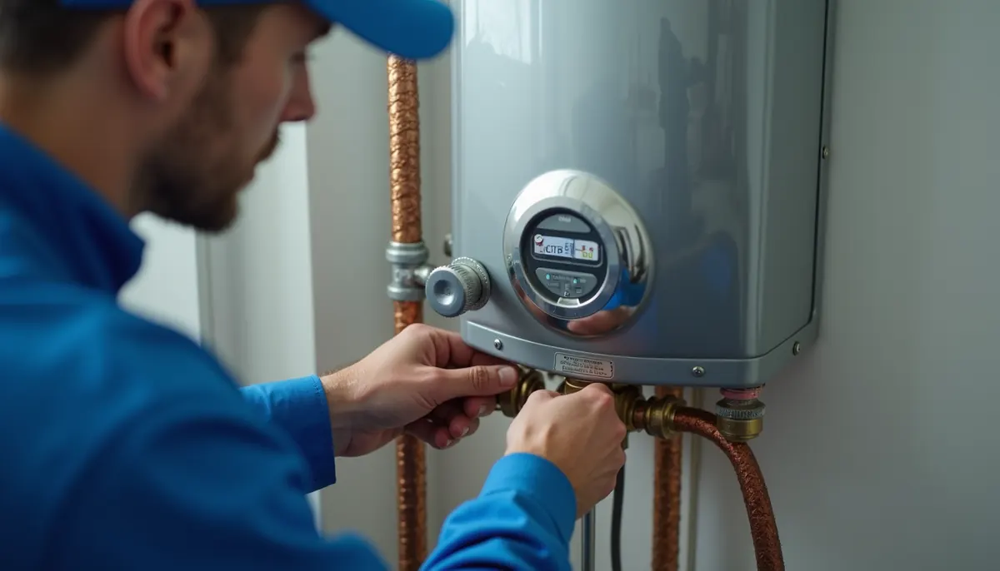
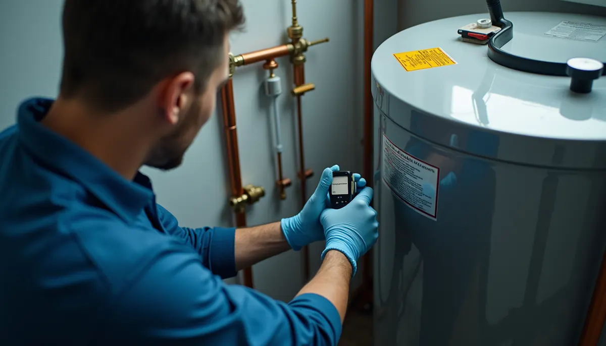

For any commercial establishment in Murfreesboro or Nashville, having reliable hot water isn't just important – it’s essential. Whether you run a restaurant, hotel, gym, office, or laundromat, access to hot water is vital for hygiene, efficient operations, and keeping customers satisfied. This is why a professionally installed commercial water heater, expertly managed by Angle Stop Plumbing, is a critical asset for your business.
While you might think about skimping on costs by hiring a less experienced team, doing so can be detrimental. Improper installation can lead to costly repairs, safety hazards, and a negative impact on your operations. Here’s why selecting Angle Stop Plumbing for your commercial water heater installation is the smartest decision you can make.
Tailored Solutions for Your Business Needs
Commercial hot water demands vary significantly from those of residential properties. For instance, a bustling restaurant may require water that heats up quickly for dishwashing and serving, while a hotel needs a constant supply for guest showers. Manufacturing plants may need specific temperatures for production.
Angle Stop Plumbing takes pride in offering customized solutions, not generic ones. Our experts will perform a comprehensive evaluation of your business's hot water consumption patterns, peak demand periods, and future growth plans. We will recommend the perfect commercial water heater system tailored to your needs, whether it's:
- A high-capacity tank model that can hold hundreds of gallons
- An energy-efficient tankless system that heats water on demand
- A hybrid solution combining both technologies for maximum efficiency
This level of customization ensures your hot water needs are met with precision, ultimately enhancing your operations.

Ensuring Compliance and Safety
Commercial plumbing, especially regarding water heaters, must adhere to strict local codes and safety regulations in Murfreesboro and Nashville. Failing to do so can result in hefty fines, operational shutdowns, and dangerous situations like gas leaks or carbon monoxide exposure.
By partnering with Angle Stop Plumbing, you gain peace of mind knowing your installation adheres to all necessary regulations. Our experienced team understands the complex legal landscape and ensures that every installation complies with safety standards, safeguarding your business and customers alike.

Energy Efficiency and Cost Savings
Investing in a commercial water heater through Angle Stop Plumbing not only ensures reliability but also improves energy efficiency. Modern systems come equipped with smart technology that can optimize energy usage. According to the U.S. Department of Energy, well-chosen high-efficiency water heaters can save you 10% to 50% on energy costs compared to standard models.
Our expert team can guide you through options, emphasizing units that provide significant long-term savings. For example, switching from a traditional electric system to an energy-efficient gas model may reduce your utility bills by around 30%. By investing in quality installation now, you can prevent disruptions and costly repairs that often follow less competent installations.
Comprehensive Support and Maintenance
A commercial water heater is a considerable investment that requires active maintenance. Angle Stop Plumbing goes beyond installation; we offer robust maintenance and support services to ensure your water heater operates optimally throughout its lifespan.
Regular maintenance checks can spot potential issues before they worsen, helping you avoid costly repair bills and downtime. With our support, you can focus on running your business while we manage your plumbing needs, ensuring smooth operations day after day.

Customized Advice for Future Growth
Your business is always evolving, and so are its hot water needs. Whether expanding operating hours, introducing new services, or changing procedures, the right commercial water heater system is crucial.
At Angle Stop Plumbing, our commitment extends beyond installation. We are here to support your growth. We can help you assess your current hot water needs against future goals. If adjustments are needed, we have scalable solutions ready to meet changing demands.
Final Thoughts
In today's competitive market, having a reliable and efficient hot water system is essential for any commercial establishment. Angle Stop Plumbing provides the expertise, customized solutions, safety compliance, ongoing maintenance, and support that ensures your business runs smoothly.
Choosing professional commercial water heater installation enhances your operational efficiency and keeps customers satisfied. Don't let subpar installations jeopardize your success. Partner with Angle Stop Plumbing today and unlock the full potential of your commercial establishment. Your business—and your customers—will be grateful!